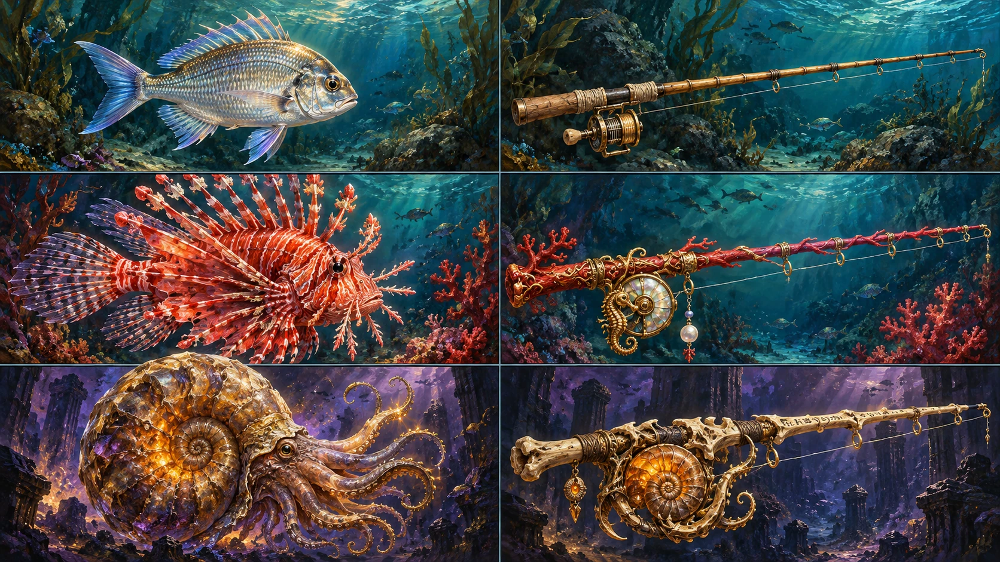

Izquierda: mojarra común, escorpión coralino raro, Titán ammonita mítico. Derecha: caña inicial de bambú, caña coralina y propuesta avanzada de hueso/ámbar. Lectura por filas: sencillo → especial → mítico.

Estas seis muestras no sustituyen las ilustraciones del catálogo y no agregan equipo ni especies. Buscan pincelada visible, materiales legibles e identidad regional. La propuesta fósil de la última caña es una exploración artística, no un objeto nuevo incorporado.
Podés elegir qué rasgos conservar antes de extender el estilo. Original completo